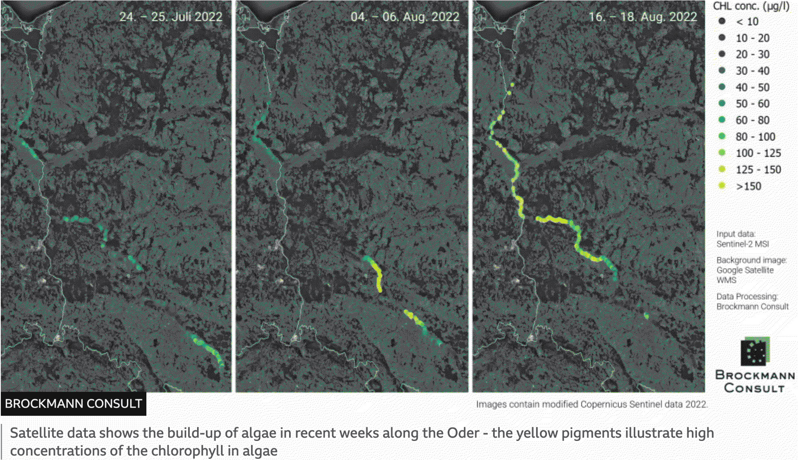

Golden algae¶

during July and August 2022, the Oder-river became the stage for a massive fish kill. Mollusk and fish corpses washed up on the shores and floated on the water surface of the 840km long river. Scientist from various institutions took water probes and discussed possible causes but it seemed difficult to identify and contextualize what had happened. By the end of September, it seemed agreed upon that the sudden death resulted from a toxin-producing microalga that would kill the life of the river for the coming years.¶
However, the thriving of this algae has multiple causes. A poor water quality due to uncommon high temperatures and a very low water levels encouraged the golden algae (Prymnesium parvum), which was identified by the Leibniz Institute of Freshwater Ecology and Inland Fisheries (IGB) in all water samples, to flourish (4, 3, 5). This causes high levels of salinity (1, 4, 5) till the point fish and mollusk organisms could not survive. It is assumed that this large overgrowth of toxic algae is next to the result of the environmental change, linked to industrial pollution, chemical wastes that was dumped into the water at some point of the river and continued to spread with its flow (1, 3, 2, 4, 5). The chemical pollutant could not be identified because the investigations started to late (4, 5). In the field of science, they talk about a failure of governmental communication and collaboration (2, 4, 5). Water samples were sent to laboratories in different countries to help identifying the cause (5). What seems clear to all institutions is that the life in the Oder-river has been disrupted and that it will take years for fishes and mollusks to come back to its banks. But why is the research focus so limited to the restoration of a former state of nature? How is it that, although it is agreed that nature is constantly evolving and adapting, so little research is done on the potential of the newly introduced microorganisms that populate the river from now on?
The Oder-river comes from the Czech Republic, passes through Poland and Germany and continues their border till it flows into the Baltic Sea. It’s a flowing water that does not stop neither change its qualities according to the made-up lines nation-states draw upon it. Yet the responsibility over the quality of the water is divided to different authorities which causes an inability to response, the lack of response-ability for environmental conditions like this. Environmental scientist James Lovelock criticized the growing disinterest in global phenomena and interdependencies in biology, where he felt it was so necessary to. Instead of focusing on molecular biology and genetic evolution, the small picture of biology research, scientist should return to seeing the big picture and start contextualizing biological phenomena (6). For Lovelock, the study of life had to be holistic; scientist should approach life as one whole organism rather focusing exclusively on the examinations of molecules and atoms (6). This would open our eyes to the self-regulating forces and feedback-systems of nature and how we can adapt our actions and sciences to them. What is happening in the examination of the Oder-river this summer is an example of science breaking wholeness into pieces and trying to restore a previous environmental state. Yet if there would be a non-human centric approach to the situation, scientist could start looking for collaboration with the more-than-human organisms inhabiting the Oder-river.
There is agreement that changing climatic conditions in terms of a warmer atmosphere have also led to the appearance of golden algae. The greenhouse gas effect that helps warming up the Earth is being intensively researched, and one of its solutions is seen in algal growth. In 2007, Lovelock presented a technical proposal to stimulate algal growth, “to draw down extra carbon dioxide from the atmosphere and increase the formation of sunlight-reflecting clouds that would decrease global heating“(7). Prymnesium parvum has been known since 1985 and its lethal potential has been extensively studied. Using morphological studies and genome sequencing, scientists are finding out about its potential to form and spread viruses. Similar techniques can be used to determine the potential for carbon sequestration and the algae’s purpose in its wider context of a global climatological changes. As a microalga, it “assimilates CO2 during autotrophic growth and produces biomass for various applications, including bioenergy production”(8).
The dispute between Poland and Germany about the responsibility of the Oder-disaster, shows how, like the division of land into countries, science’s approach to study specifies, sometimes fails to integrate particular events into wider interdependent phenomena. Instead of blaming each other and trying to find the cause of this environmental disaster in a particular chemical pollutant released by a particular institution or person, scientists could focus on the potential collaboration with this emerging organism and see how the Oder-river could be a potential tool for carbon sequestration and rebalancing the Earth’s biosphere.
sources:
news reports:
(2) https://phys.org/news/2022-09-germany-mass-fish-deaths-oder.html
(4) https://www.bbc.com/news/world-europe-62688036
scientific backing:
(6) James E. Lovelock & Lynn Margulis (1974). Atmospheric homeostasis by and for the biosphere: the gaia hypothesis. Tellus, 26:1-2, pp. 2-10.
(8) Lovelock, J., Rapley, C. (2007). Ocean pipes could help the Earth to cure itself. Nature 449, p. 403.
(9) Miguel A. Vale, Antonio Ferreira, Jose C.M. Pires, & Ana L. Goncalves (2020). CO2 capture using microalgae. Elsevier, Chapter 17, pp. 381-405.